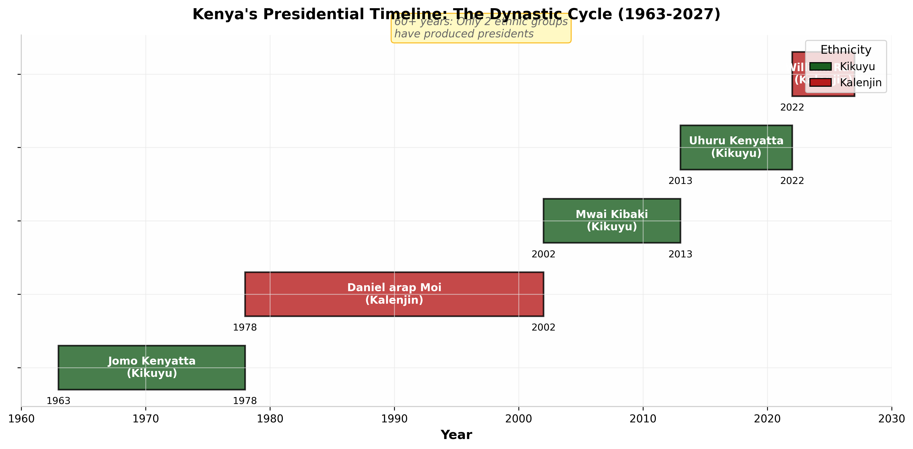
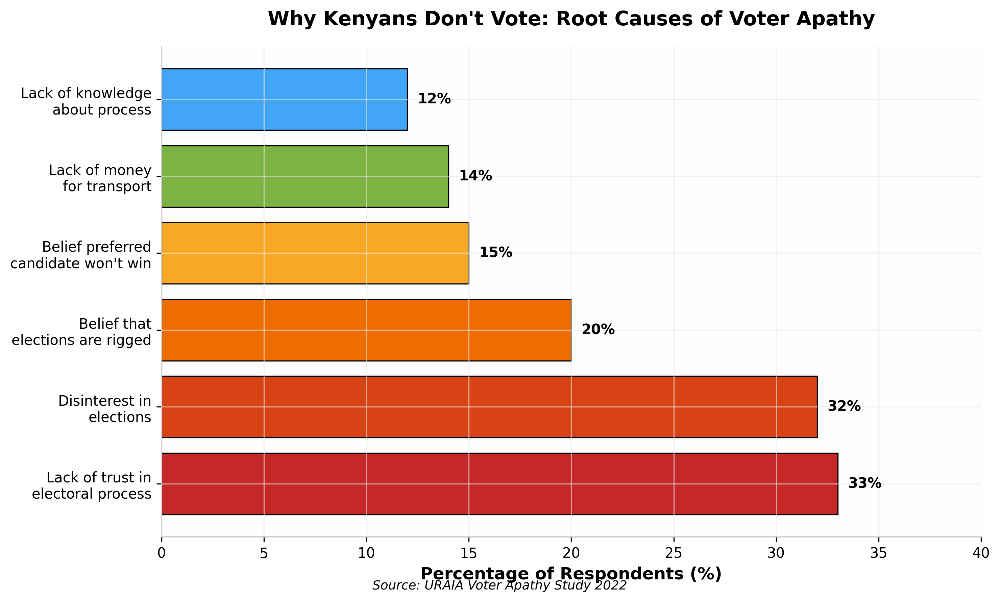
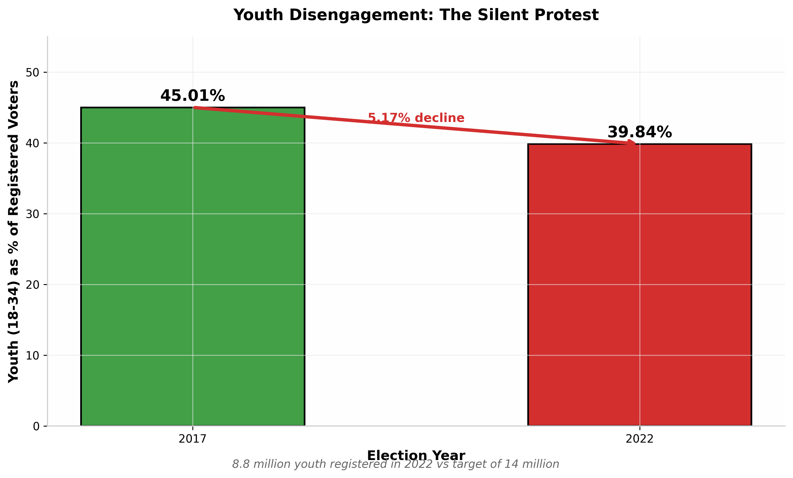
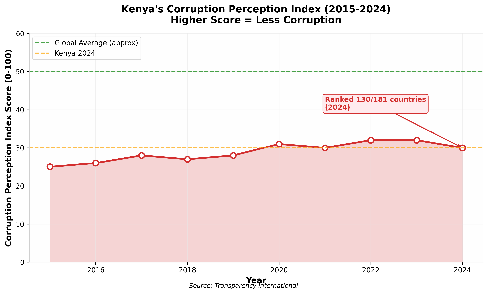
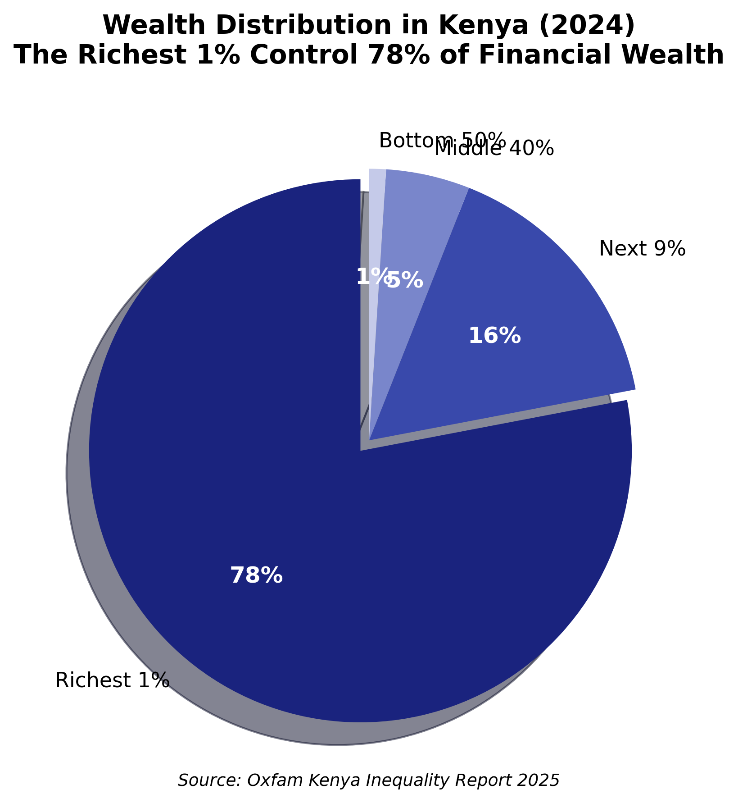
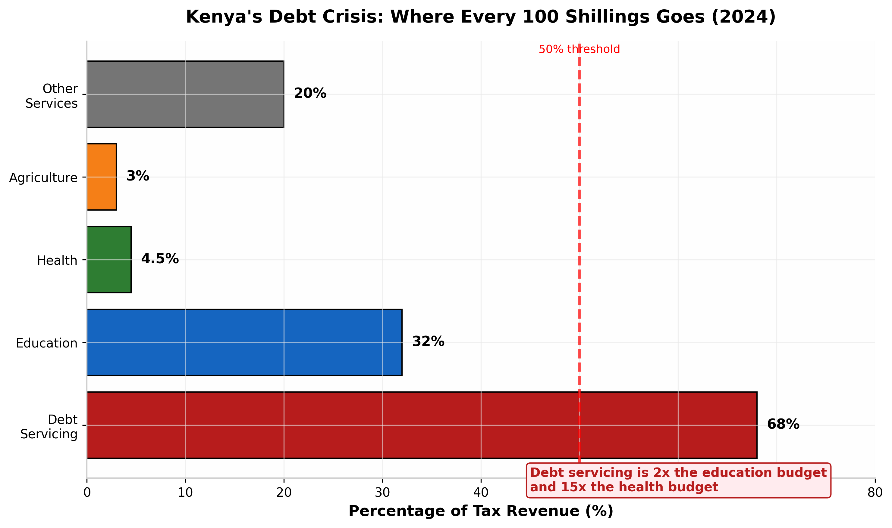

"In Kenya, we do not elect leaders; we merely select the next strain of a fever that has been consuming us for sixty years, driven by a suicidal optimism that this time, the parasite will mistake itself for the cure."
In Kenya, we do not elect leaders; we merely select the next strain of a fever that has been consuming us for sixty years, driven by a suicidal optimism that this time, the parasite will mistake itself for the cure.
This is not a book about politicians. It is not about Raila Odinga or William Ruto, about Uhuru Kenyatta or Daniel arap Moi. They are merely characters in a much larger drama—a drama that predates them and will outlast them. This is a book about us, the Kenyan voter. It is about the psychological condition that keeps us returning to the ballot box with hope in our hearts, only to be disappointed again and again, yet returning once more with the same hope, as if the definition of insanity were not doing the same thing repeatedly and expecting different results.
The 2022 General Election recorded the lowest voter turnout in fifteen years—just 64.77% of registered voters cast their ballots, down from 79.51% in 2017. This was not merely voter apathy; it was a silent scream, a withdrawal of consent, a recognition by millions of Kenyans that the ritual had lost its meaning. Yet among those who voted, the same patterns persisted—the same ethnic calculations, the same hope that this time would be different, the same suicidal optimism.
Kenya's declining voter turnout reflects a growing crisis of confidence in the electoral process
What is this fever that grips us every election cycle? Why do we dance in the streets for politicians who have done nothing to earn our trust? Why do we believe that changing the face at State House will change the system that has impoverished us for generations?
"The fever is not the politicians; the fever is the system they inhabit—a system designed not for governance but for extraction, not for service but for patronage."
This book is an attempt to diagnose the fever. It is an uncomfortable examination of our political psychology, our collective delusions, and the architecture of a system that has learned to survive by changing its hosts while remaining essentially the same. It is written not to depress but to awaken—not to destroy hope but to redirect it toward more productive avenues of change.
For if we do not understand the nature of our affliction, we cannot hope to cure it. And cure it we must, for the fever is killing us—slowly, systematically, and with our own consent.
I
The Anatomy of the Fever
Understanding the Political Euphoria
The Atmosphere of Artificial Euphoria
There is a peculiar atmosphere that descends upon Kenya every five years—a feverish excitement that seems to infect the entire nation. It begins months before the election, builds to a crescendo in the final weeks, and then dissipates almost immediately after the results are announced, leaving behind a hangover of disappointment and resignation.
This artificial euphoria is not accidental. It is manufactured, cultivated, and deployed with surgical precision by the political class. The rallies, the music, the branded merchandise, the promises of transformation—all of it is designed to create a collective hallucination in which the voter forgets the failures of the past and believes, once again, that this time will be different.
The 2022 election campaign was a masterclass in this manufactured euphoria. Despite Kenya facing its worst economic crisis in decades—with public debt exceeding $80 billion, youth unemployment at 67%, and nearly half the population living in extreme poverty—the campaign was conducted as if these problems were minor inconveniences that would be solved by the simple act of changing presidents.
The Economic Reality Behind the Euphoria
68%of every 100 shillings in tax revenue goes to debt servicing
$80 Billionin public debt—more than double the state budget
67%youth unemployment rate in 2024
The disconnect between the campaign rhetoric and the economic reality was staggering. Candidates promised millions of jobs, universal healthcare, and economic transformation, while the data showed a nation drowning in debt, with its productive sectors stagnant and its youth despairing. Yet the crowds cheered, the media amplified the messages, and the voters prepared to make their choices as if these promises had any connection to reality.
The Transient Hosts
The Kenyan political class functions not as leaders in the traditional sense but as transient hosts for a system that remains essentially unchanged. From Jomo Kenyatta to Daniel arap Moi, from Mwai Kibaki to Uhuru Kenyatta, and now to William Ruto—the faces have changed, the ethnic calculations have shifted, but the fundamental nature of the Kenyan state has remained remarkably consistent.
This is the first insight that must be grasped if we are to understand our condition: the politicians are not the disease; they are merely the symptoms. The disease is the system itself—a system designed during the colonial era, refined during the Kenyatta and Moi dictatorships, and preserved through the democratic transition of 2002. It is a system built on extraction rather than production, on patronage rather than merit, on ethnic mobilization rather than national unity.

Sixty years of independence: only two ethnic groups have produced presidents
The transient nature of these hosts is essential to the system's survival. Every five or ten years, a new face emerges with promises of change, giving the population hope that the fundamental problems will finally be addressed. When these promises are inevitably broken, the population's disappointment is directed at the individual rather than the system, and the cycle begins anew with the next host.
The Operating System of 1963
The most profound illusion in Kenyan politics is the belief that we have undergone fundamental political change since independence. We have not. What we have experienced is a series of user interface updates—the buttons have moved, the colors have changed, but the underlying operating system remains the same one installed in 1963.
This operating system has several core features that have persisted across all administrations:
Centralized executive power: The President controls appointments to all key institutions, from the judiciary to the electoral commission to the anti-corruption agencies. This ensures that no genuine check on executive power exists.
Ethnic arithmetic: Political competition is structured around ethnic mobilization rather than policy debate. The "tyranny of numbers" determines electoral outcomes, making policy irrelevant.
Patronage networks: Access to state resources is determined by political loyalty rather than need or merit. The state functions as a spoils system to be distributed among supporters.
Impunity: Those connected to power face no consequences for corruption or abuse of office. The law is enforced selectively, primarily against the powerless and the opposition.
"The noise of the rallies is a collective hallucination designed to hide the fact that the operating system hasn't been updated since 1963; only the UI changes."
The 2010 Constitution was supposed to change this. It introduced devolution, created independent institutions, and promised a new era of governance. And to some extent, it did—the counties have provided new avenues for service delivery, and some institutions have shown independence. But the fundamental architecture of power remains unchanged. The President still controls the purse strings, still makes the key appointments, and still determines who prospers and who suffers.
Until we recognize that the problem is not the hosts but the operating system they inhabit, we will continue to cycle through the same pattern of hope and disappointment, election after election, generation after generation.
II
The Psychological Autopsy
Understanding Suicidal Optimism
Defining Suicidal Optimism
Suicidal optimism is the recurring belief that a new predator will somehow protect the prey. It is the conviction, against all evidence, that the politician who has spent decades in the same system that has failed us will somehow be the one to transform it. It is the hope that the wolf, if given enough time in the sheepfold, will become a shepherd.
This psychological condition is not unique to Kenya, but it has taken on a particularly virulent form here. The reasons are historical and structural. We are a young nation that achieved independence with great hope and optimism. The first decades of independence saw genuine economic growth and social transformation. The disappointment of the Moi years was followed by the promise of multiparty democracy, and the disappointment of the multiparty era was followed by the promise of the 2002 "Kibaki Tosha" moment, and the disappointment of the Kibaki years was followed by the promise of the 2010 Constitution.
Each cycle of hope and disappointment has left its psychological scar, but it has not extinguished the hope itself. If anything, the hope has become more desperate, more willing to believe in miracles, more susceptible to the charms of any politician who promises transformation.

The root causes of voter apathy reveal deep distrust in the electoral process
The data from the 2022 elections reveals the extent of this crisis. According to URAIA's voter apathy study, the main reasons Kenyans didn't vote were: lack of trust in the electoral process (33%), disinterest in elections (32%), and the belief that elections would be rigged (20%). These are not the responses of a healthy democracy; they are the responses of a population that has lost faith in the fundamental mechanisms of representation.
The Stoic Lens: Loss of Agency
The ancient Stoics made a distinction between what is within our control and what is not. They taught that wisdom lies in focusing our energy on the former while accepting the latter with equanimity. The Kenyan voter has lost this distinction. We focus obsessively on the external—the candidate's face, their promises, their ethnic identity—while ignoring the internal—the systemic rot we consent to, the patronage networks we participate in, the corruption we tolerate.
This loss of agency is not accidental. It is cultivated by a political class that benefits from our passivity. We are encouraged to see politics as something that happens to us rather than something we do. We are spectators at our own governance, cheering or booing from the sidelines while the real decisions are made in boardrooms and private clubs.
"We focus on the 'external' (the candidate's face) while ignoring the 'internal' (the systemic rot we consent to)."
The 2024 Gen Z protests against the Finance Bill represented a partial recovery of this agency. For the first time in decades, young Kenyans took to the streets not in support of a politician but in opposition to a policy. They organized online, bypassing the traditional political structures, and forced the government to withdraw the bill. It was a glimpse of what citizen power could look like when it is not mediated through the ballot box.
But the protests also revealed the limits of this agency. The government responded with violence—at least 39 protesters were killed, 361 injured, and 627 arrested. The message was clear: citizen agency will be tolerated only within narrow bounds, and those who step outside those bounds will be punished.
The Last Samurai Theme
There is something noble in the Kenyan voter's persistence, something almost tragic in our willingness to keep believing despite all evidence. It is the nobility of the last samurai, fighting a battle he knows he cannot win because the alternative—surrender—is unthinkable.
But this nobility is misplaced. We are not fighting a battle; we are participating in a ritual designed to fail us. We are not warriors; we are extras in a drama written and directed by others. Our participation in elections does not challenge the system; it legitimizes it. Our votes are not weapons of change; they are tokens of consent.

Youth voter registration decline signals a generation's withdrawal from formal politics
The youth understand this better than their elders. The decline in youth voter registration—from 45% of registered voters in 2017 to 39.84% in 2022—is not apathy; it is a rational response to a system that has failed them. Why participate in a ritual that has no connection to your lived reality? Why vote when you are unemployed, when your education has not opened doors, when your future seems to consist of endless hustling for survival?
Their withdrawal is a form of protest, a refusal to legitimize a system that offers them nothing. And their return to the streets in 2024 was a declaration that they would find other ways to make their voices heard—ways that did not depend on the ballot box or the political class.
III
The Architecture of Deceit
Systemic Logic of Kenyan Politics
Features, Not Bugs
To understand the Kenyan political system, one must abandon the assumption that its dysfunctions are accidental. Corruption is not a bug to be fixed; it is a feature designed into the system. Tribal mobilization is not an unfortunate legacy of the past; it is a deliberate strategy of control. The failure of development is not a consequence of poor planning; it is the inevitable result of a system designed for extraction rather than production.
This is a difficult truth to accept. We prefer to believe that our leaders are well-intentioned but incompetent, that corruption is the work of a few bad apples, that with the right policies and the right people, the system can be made to work. But this belief is itself a form of suicidal optimism—a refusal to see the system for what it is.
Consider corruption. Kenya ranks 130 out of 180 countries on Transparency International's Corruption Perception Index, with a score of just 30 out of 100. This is not an accident or a failure of enforcement. It is the result of a system in which those with political connections are above the law, in which anti-corruption agencies are controlled by the very people they are supposed to investigate, and in which the judiciary can be bought or intimidated.

Kenya's Corruption Perception Index shows persistent high levels of corruption
The figures are staggering. According to Oxfam Kenya, the richest 1% of Kenyans control 78% of the country's total financial wealth. The 125 richest Kenyans possess more wealth than 42.6 million citizens combined. This concentration of wealth is not an unfortunate side effect of economic growth; it is the direct result of a political system that channels public resources to private hands through corruption, patronage, and cronyism.
The Great Economic Divide
78%of Kenya's financial wealth controlled by the richest 1%
125richest Kenyans own more than 42.6 million citizens combined
214xa CEO in top 10 companies earns 214 times more than a teacher
The Cycle of Consumption
The Kenyan political system functions as a cycle of consumption. Every five years, the population is fed a new narrative of hope and transformation. They vote, hoping that this time will be different. The new government takes office, appoints its loyalists to key positions, and begins the process of extracting resources for itself and its supporters. Promises are broken, scandals emerge, and disappointment sets in. By the next election, the population is ready for a new narrative, a new face, a new hope—and the cycle begins again.
This cycle serves the interests of the political class perfectly. It keeps the population engaged enough to legitimize the system through voting, but not engaged enough to demand fundamental change. It channels dissent into electoral competition between factions of the same elite, rather than into challenges to the elite itself. And it ensures that the fundamental architecture of power remains unchanged, regardless of who holds office.

Extreme wealth concentration in Kenya undermines social cohesion
The Dog Analogy
There is an analogy that captures the essence of this system. Imagine a dog that is trained to expect a treat every time it performs a trick. The dog learns the trick, performs it enthusiastically, and receives its reward. Over time, the dog becomes so conditioned to the ritual that it continues to perform even when the treats become smaller and less frequent.
The Kenyan voter is that dog. We have been trained to expect transformation every five years, to perform the trick of voting in exchange for the promise of development. We perform enthusiastically, dancing at rallies and cheering at promises, even though the treats have become smaller and less frequent with each cycle. We continue to perform because we have been conditioned to believe that the treat will come, that our participation will be rewarded, that this time will be different.
"The system requires a fresh 'new leader' every few years to keep the populace pacified while the devouring continues unabated."
The system requires this fresh "new leader" every few years to keep the populace pacified while the devouring continues unabated. The new leader provides the illusion of change, the hope of transformation, the narrative that allows the system to survive another cycle. And when the new leader fails to deliver, there is always another new leader waiting in the wings, ready to make the same promises and start the cycle anew.
The 2022 election was a variation on this theme. William Ruto positioned himself as the "hustler" candidate, the outsider who would challenge the dynasties and transform the system. He promised a "bottom-up" economic model that would lift the poor out of poverty. And yet, within months of taking office, his government was proposing tax increases on basic commodities, his officials were embroiled in corruption scandals, and the economic situation of ordinary Kenyans was deteriorating.
The system had changed its host, but the fever remained.
IV
Breaking the Fever
Pathways to Genuine Change
The Hard Truth
The fever will not break by changing the host. This is the hard truth that must be accepted if we are to move forward. No politician, however well-intentioned, can transform a system that is designed to resist transformation. No election, however free and fair, can produce outcomes that the system is not designed to deliver. No new face at State House can change the fundamental architecture of power.
This truth is difficult to accept because it challenges our most deeply held beliefs about democracy. We have been taught that voting is the primary mechanism of change, that the ballot box is where citizens exercise their power, that elections are the foundation of representative government. And in a well-functioning democracy, these things are true. But Kenya is not a well-functioning democracy. It is a competitive authoritarian system in which elections serve to legitimize rather than challenge the existing order.
The 2024 Finance Bill protests offered a glimpse of an alternative. When young Kenyans took to the streets, they bypassed the electoral system entirely. They did not wait for the next election to express their grievances; they expressed them directly, through collective action. And they achieved something that decades of voting had not achieved—they forced the government to withdraw a policy.

Kenya's debt crisis crowds out spending on essential public services
This is not to say that voting is meaningless or that elections should be abandoned. Elections still matter—they determine who holds power, who makes appointments, who controls the purse strings. But they are not sufficient. They are one tool among many, and in the Kenyan context, they are not the most effective tool for achieving fundamental change.
The Call to Mastery
The Stoics taught that the path to freedom lies in mastering oneself—one's desires, one's fears, one's reactions to external events. This is the challenge facing the Kenyan voter: to master our suicidal optimism, to see the system clearly for what it is, and to channel our energy toward strategies that have a genuine chance of producing change.
This mastery requires several things:
Clarity of vision: We must see the system for what it is—not a broken democracy that can be fixed with better leaders, but a functioning extraction machine that serves the interests of a small elite. Only with this clarity can we devise effective strategies for change.
Strategic patience: Fundamental change does not happen in five-year electoral cycles. It requires sustained organizing, institution-building, and culture-changing work over decades. We must be prepared for the long haul.
Diversified tactics: Voting is one tactic among many. We must also engage in protest, in civil society organizing, in media activism, in economic self-organization, and in the countless other forms of citizen action that can pressure the system from multiple directions.
Collective solidarity: The system thrives on our division—ethnic, religious, class. We must build solidarity across these divisions, recognizing that our common interests as citizens outweigh our differences as members of particular groups.
"True 'change' requires a 'refactoring' of the citizen's mind—a move from optimism to clarity."
The Refactoring of the Citizen's Mind
The most profound change must happen within ourselves. We must refactor our minds—restructure our assumptions, our beliefs, our automatic responses to political stimuli. We must move from optimism to clarity, from hope to strategy, from passive spectatorship to active citizenship.
This refactoring involves several shifts:
From personality to structure: We must stop evaluating politicians based on their personalities, their charisma, or their promises, and start evaluating them based on the structural constraints they face and the interests they represent. A good person in a bad system will still produce bad outcomes.
From events to processes: We must stop focusing on electoral events as the primary sites of political change and start focusing on the ongoing processes of organizing, advocacy, and institution-building that happen between elections.
From consumption to production: We must stop consuming politics as spectators—watching rallies, reading headlines, sharing memes—and start producing it as active participants—organizing in our communities, holding leaders accountable, building alternative institutions.
From ethnic to civic identity: We must stop seeing ourselves primarily as Kikuyu, Luo, Kalenjin, or Luhya, and start seeing ourselves primarily as Kenyan citizens with shared interests and common destiny.
These shifts are difficult. They go against decades of conditioning, against the habits of a lifetime, against the easy pleasures of political tribalism and consumer passivity. But they are necessary if we are to break the fever and build a genuinely democratic Kenya.
E
Epilogue
The Pen and the Knife
The Final Image
Imagine a voter standing at the ballot box. In their hand is a pen, the instrument of democratic participation, the symbol of citizen power. But as they look more closely, they realize that the pen is actually a knife—a knife they have been using, election after election, to cut their own throat.
This is the final image I want to leave with you. Not to depress you, not to make you despair, but to wake you up. The ballot box is not the only site of political action, and the pen is not the only instrument of change. We have other tools at our disposal—our voices, our feet, our organizing power, our economic leverage, our collective solidarity.
The 2024 Gen Z protests showed us what is possible when citizens stop waiting for the next election and start taking action in the present. They showed us that the system can be pressured, that policies can be reversed, that the people have power when they choose to exercise it. They showed us that the fever can break, if we are willing to take the medicine.
"The arc of the moral universe is long, but it bends toward justice—if we bend it."
— Adapted from Martin Luther King Jr.
The task before us is not easy. The system has survived for sixty years because it is resilient, because it has learned to absorb and neutralize challenges, because it has convinced us that there is no alternative. But there is always an alternative. The alternative begins with clarity—seeing the system for what it is. It continues with organization—building the collective power to challenge it. And it culminates in action—the sustained, strategic pressure that can force fundamental change.
The hosts will continue to change. New faces will emerge with new promises. The fever will try to reassert itself, to convince us that this time will be different. But we will know better. We will see the system clearly, we will organize strategically, and we will act collectively. And slowly, painfully, but inevitably, we will bend the arc of our nation's history toward justice.
* * *
The voter at the ballot box looks at the pen in their hand. They see it for what it is—a knife they have been using against themselves. And for the first time, they decide to put it down. They turn away from the ballot box and walk toward their community, their neighbors, their fellow citizens. They begin to organize, to mobilize, to build the collective power that can challenge the system itself.
This is where the story begins. Not at the ballot box, but in the streets, in the communities, in the countless acts of solidarity and resistance that build the foundation of genuine democracy. The fever is breaking. The awakening has begun. The future is ours to shape.
Data Appendix: The Numbers Don't Lie
Table 1: Voter Turnout Trends (2002-2022)
Year
Registered Voters
Voter Turnout
Change
2002
10,451,150
56.0%
—
2007
14,296,180
69.1%
+13.1%
2013
14,352,533
85.9%
+16.8%
2017
19,611,423
79.5%
-6.4%
2022
22,120,458
64.8%
-14.7%
Table 2: 2022 Presidential Election Results
Candidate
Votes
Percentage
William Ruto
7,176,141
50.49%
Raila Odinga
6,942,930
48.85%
George Wajackoyah
61,969
0.44%
David Mwaure
31,987
0.23%
Table 3: Economic Indicators (2024)
Indicator
Value
Source
Public Debt
$80+ billion
World Bank
Debt Servicing (% of revenue)
68%
Oxfam Kenya
Youth Unemployment
67%
Transparency International
Extreme Poverty Rate
46%
World Bank
Wealth Controlled by Richest 1%
78%
Oxfam Kenya
Corruption Perception Index
30/100 (Rank 130/180)
Transparency International
Table 4: Causes of Voter Apathy (2022)
Reason
Percentage
Lack of trust in electoral process
33%
Disinterest in elections
32%
Belief that elections are rigged
20%
Belief preferred candidate won't win
15%
Lack of money for transport
14%
Lack of knowledge about process
12%
Source: URAIA Voter Apathy Study 2022
References
African Union & COMESA. (2022). Election Observation Mission Report: Kenya General Elections 2022.
Commission of Inquiry into Post-Election Violence. (2008). Report of the Commission of Inquiry into Post-Election Violence. Nairobi: Government Printer.
GeoPoll. (2022). Kenya Elections 2022: A Survey Report.
Independent Electoral and Boundaries Commission (IEBC). (2022). Post Election Evaluation Report.
Kenya National Bureau of Statistics. (2024). Economic Survey 2024. Nairobi: KNBS.
Kofi Annan Foundation. (2022). Kenya Post-Election Roundtable 2022 Review.
Ndiritu Muriithi, Kiama Kaara, & Githinji Ndiritu. (2024). Kenya's Public Debt Crisis: A Political Economy Analysis (2010-2023). NDI.
Oduor, R. M. J. The History of Ethnicised Politics in Kenya: Impact on Public Policy. African Journal of Political Science.
Oxfam Kenya. (2025). Kenya's Inequality Crisis: The Great Economic Divide. Nairobi: Oxfam.
Stats Kenya. (2025). Kenya General Elections Presidential Results and Voter Turnout 2022.
Transparency International. (2024). Corruption Perceptions Index 2024. Berlin: Transparency International.
Transparency International. (2025). Kenya's Debt Crisis: Misaligned Financing and Corruption.
URAIA Trust. (2022). Voter Apathy Study 2022: Final Report. Nairobi: URAIA.
USIP. (2013). Elections and Violent Conflict in Kenya: Making Prevention Stick. Washington: USIP.
WFD & NIMD. (2021). The Cost of Politics in Kenya. Westminster Foundation for Democracy.
World Bank. (2025). Kenya Economic Update: Special Focus on Poverty and Distributional Impacts of Fiscal Policy. Washington: World Bank.
About This Work
This book is a work of political commentary and analysis, synthesizing research from multiple sources including election observation reports, academic studies, civil society research, and official government data. The views expressed are those of the author and are intended to stimulate critical thinking about Kenya's political system and the possibilities for genuine democratic transformation.
The title and conceptual framework were inspired by a conversation between the author and Google's Gemini AI, which helped articulate the central metaphor of the "fever" that persists despite changing political hosts.